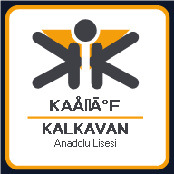

⚠️
İnternet bağlantısı yok — Çevrimdışı moddasınız. Kayıtlar yerel olarak IndexedDB'de saklanmaktadır.
✓
İnternet bağlantısı yeniden sağlandı.

ODİS'i Cihazınıza Yükleyin
Hızlı erişim, tam ekran deneyim ve çevrimdışı çalışma için ana ekrana ekleyin.
Daha Sonra
Uygulamayı Kur
🚀 Yeni bir ODİS sürümü hazır!
Güncelle ve Yenile